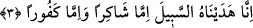

şeytandır. Üçü de mü’mindir, onlar da aklı, ruhu ve kalbidir. Allah kulunu yardımı ile
destekler, ona güç verirse aklı kalbine gâlip gelip ona hâkim olur, nefis ve hevâsını esir
alır. Böylece nefis ve hevâ hareket imkânı bulamazlar. Nefis ruhla, hevâ akılla ünsiyet
peydâ eder. O zaman da Allah’ın “Allah’ın sözü ise zâten yücedir” (et-Tevbe, 9/40)
ve “Fitne ortadan kalkıncaya ve din tamamen Allah’ın oluncaya kadar onlarla
savaşın” (Enfâl, 8/39) beyânlarında yer aldığı üzere Allah’ın kelimesi en yüce olur.
3. Şüphesiz biz ona (doğru) yolu gösterdik. İster şükredici olsun ister nankör.
“Şüphesiz Biz O’na yolu gösterdik.” Bu ifâde yukarda yer alan ve insana bir kısım
duyular verildiğini ifâde eden cümlelerin üzerine ve arkasına getirilmektedir. Bu son
âyet-i kerîme, insana neden işitme ve görme yeteneği verildiğinin sebebini ifâde eder
gibidir. Bir başka ifâdeyle; insana zâhiren ve bâtınen duyu organlarının verilmesi ve
insanın bu yeteneklerle bezenmiş olarak yaratılması hidâyet verilmesinden, bir başka
ifâdeyle kendisine doğru yolun gösterilmesinden öncedir. Buna göre âyet-i kerîmenin
mânâsı: Biz insana doğru yolu gösterdik. Âyetler indirmek ve bu yollara giden delilleri
dikmek sûretiyle insana hayır, şer, kurtuluş ve helâk yollarını öğrettik, demek olur. Bu
tıpkı “Ona iki yolu (doğruyu ve eğriyi) göstermedik mi?” (el-Beled, 90/10) âyet-i
kerîmesinin anlamını çağrıştırmaktadır. O âyet-i kerîmede Allah: “Biz insana hayrın ve
şerrin yolunu beyân ettik” demiş oluyor. Çünkü o âyette yer alan “necd” kelimesi; açık
ve yüksek yol demektir.
Tefsirini yaptığımız bu âyetteki “hidâyet” kavramından maksad, -bâzı tefsir
kitaplarında yer aldığı üzere- “arzulanan hedefe ulaştırıcı delâlet” değil, sâdece “yol
göstermek”ten ibârettir.
“İster şükredici olsun, ister nankör.” İrşad’da bu âyet-i kerîme şöyle tefsir olunuyor:
Biz, -ister şükredici olsun, ister nankör-, insanoğluna istediğine ulaştırıcı yolu tutma
gücü ve buna ulaşmasına fırsat verdik. Bu son “ister şükredici olsun, ister nankör”
cümlesi, yukarda geçen ve “insan”a giden “o” zamirinden hâldir. Bu cümle, yukarda
bahsi geçen “insan”ın hâlini ayrıntısıyla aktarmaktadır. Çünkü insan kelimesi “hallere
delâlet” itibariyle ayrıntısızdır. Dolayısıyla insanın doğru yolu tutması inkâr hâlinde mi
yoksa îmanlı olduğu hâlde mi olacaktır, bu bilinmemektedir. İşte şimdi getirilen ayrıntı
cümlesiyle ortaya çıkıyor ki, insana doğru yolun gösterilmesi, her iki hâl için de söz
konusudur. Tevhid sâhibi olan şükredici insanla, nankör insandan herbiri içindir. Çünkü
şükrün başı; nimeti bahşedeni ikrar ve tanımak demektir. Küfrün başı ise nimeti vereni
inkâr etmektir. Arapçada “şakiru’n- ni’meti/nimete şükreden” ve “kâfiru’n-
ni’meti/nimete nankörlük eden” deyimleri kullanılır.
Râğıb İsfahânî’nin ifâdesine göre “kefûr” hem “kâfiru’n-ni’meti/nimete nankör” ve